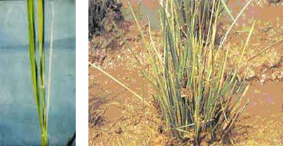
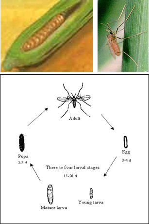

|
PESTS OF RICE (BORERS AND FOLIAGE FEEDERS) :: Major Pests :: Gall Midge
2. Gall midge: Orseolia oryzae (Cecidomyiidae: Diptera)
Distribution and Status: India, Burma, Cambodia, Sri Lanka, China, Indonesia, Nigeria, Sudan, Vietnam and Pakistan.
Host range: Rice, wild species of Oryza and grasses like Paspalum scrobiculatum, Panicum spp., Cyanodan dactylon and Eleucine indica.
|
 |
Onion shoots affected tillers (IRRI) |
 |
Damage symptoms: The maggot feeds at the base of the growing shoot causing formation of a tube like gall similar to “onion needle” or “silver-shoot”. Infested tillers produce no panicles.
ETL: 10% silver shoots.
Bionomics: Orange coloured mosquito like fly is active during night and lays 100-300 reddish, elongate, tubular eggs just near the ligule of the leaf blade. Egg period 3-4 days, maggot pale red during feeding and larval period 8-10 days. Maggot pupates at the base of the gall and moves to tip of the gall and projects outside during emergence. Life cycle lasts for 15-20 days.
Management
- Encourage early planting of the crop with quick growing varieties to escape infestation.
- Use resistant varieties like MDU-3, Shakthi, Vikram, Sureka, IR 36, Kkatiya, Dhanaya Lakshmi, Phalguna, Kunti, Shamlei, Asha, Rajendran, Shrakasha, Erra mallelu, Kavya, Orugallu and R 650 -1820
- Plough immediately after crop harvest.
- Remove the alternate host.
- Apply fertilizers in balanced manner.
|
- Set up light trap @ 1 / ha as a monitoring device. Infra red light trap attracts gall midge effectively.
- Release larval parasitoid, Platygaster oryzae through parasitized galls @ 1 per 10 m2 in the main field at 10 days after transplanting (DAT).
- The is an effectivhe predator.
- Conserve predatory spiders like Tetragnatha, Argiope catenulata and carabid beetle (Ophionia indica) in rice ecosystem.
- Apply carbofuran 3G @ 25 kg or fipronil 0.3 G 16.7 - 25.0 kg or spray endosulfan 35 EC 1.0 L or quinalphos 25 EC 1.0 L or ethofenprox 10 EC 500-750 ml or fipronil 5 SC 1.0 -1.5 kg or lambda-cyhalothrin 2.5 EC 500 ml / 5 EC 250 ml or thiamethoxam 25 WG 100 g in 500 L water/ha
|
|